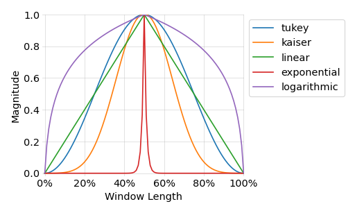

window()¶
- audmath.window(samples, shape='tukey', half=None)[source]¶
Return a window.
The window will start from and/or end at 0. If at least 3 samples are requested and the number of samples is odd, the windows maximum value will always be 1.
The shape of the window is selected via
shapeThe following figure shows all available shapes. For the Kaiser window we use and set its first sample to 0.- Parameters
- Return type
- Returns
window
- Raises
ValueError – if
shapeis not supportedValueError – if
halfis not supported
Examples
>>> window(7) array([0. , 0.25, 0.75, 1. , 0.75, 0.25, 0. ]) >>> window(6) array([0. , 0.25, 0.75, 0.75, 0.25, 0. ]) >>> window(5, shape="linear", half="left") array([0. , 0.25, 0.5 , 0.75, 1. ])